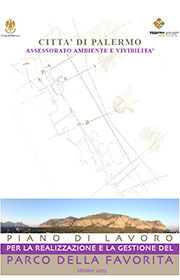
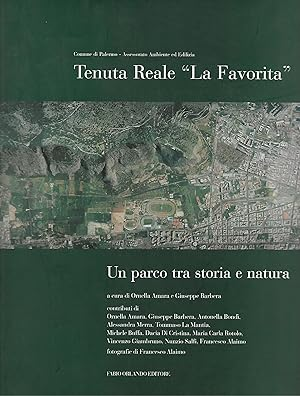
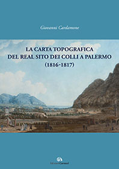
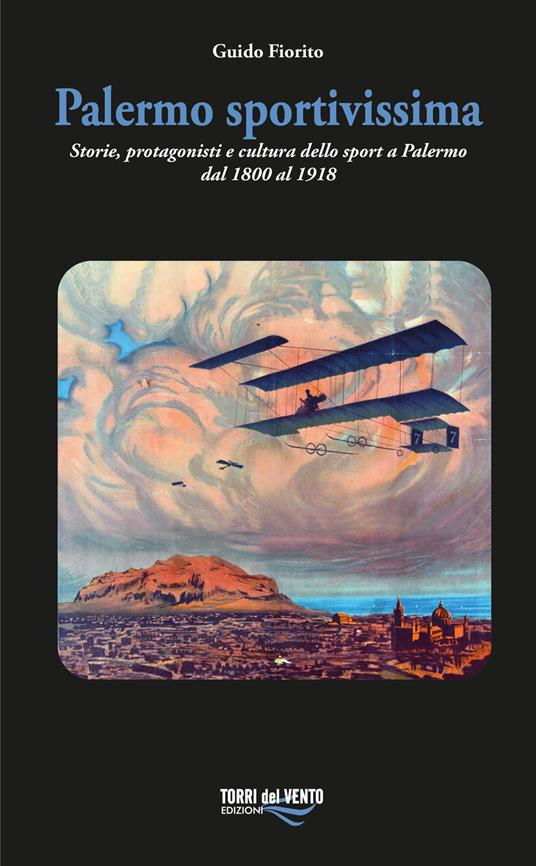
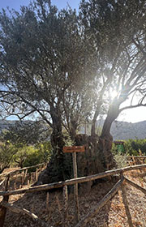
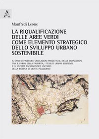
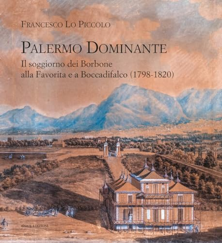
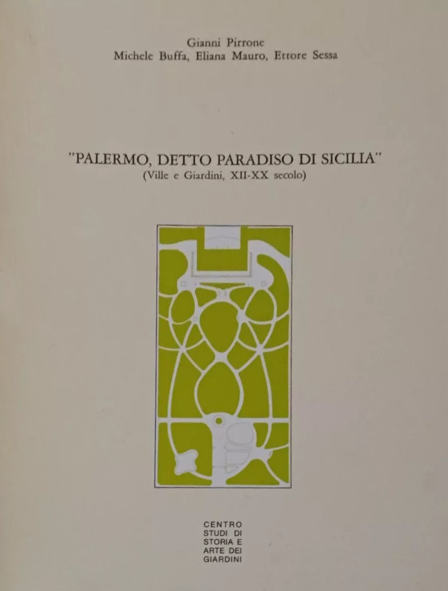
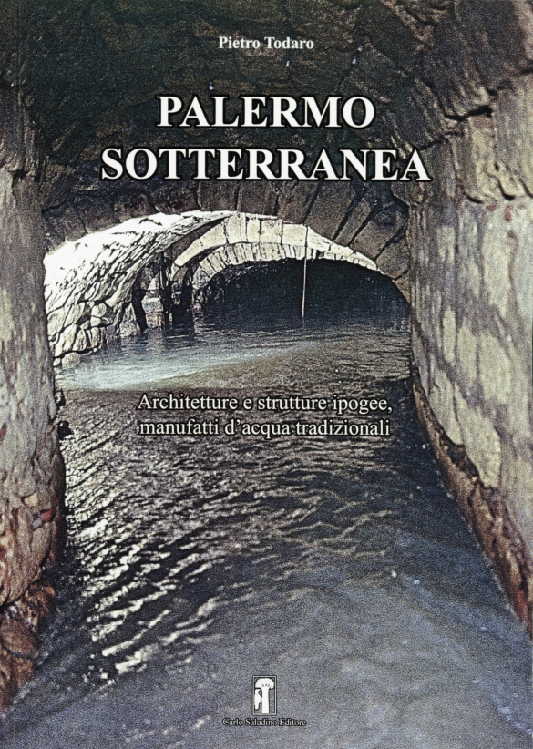
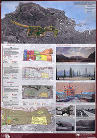

Indice bibliografico

Piano di lavoro per la realizzazione e la gestione del Parco della Favorita 2013
Autore: Ornella Amara, Giuseppe Barbera, Nicoletta Carini, Carmela Cotrone, Girolamo D'Accardio
Editore: Città di Palermo, 2013

Tenuta Reale La Favorita. Un parco tra storia e natura
Autore: Ornella Amara, Giuseppe Barbera
Editore: Comune di Palermo, Fabio Orlando Editore, 2004

La Carta topografica del Real Sito dei Colli
Autore: Giovanni Cardamone
Editore: Edizioni Caracol, Palermo, 2022
Contributi botanici alla conoscenza del verde storico a Palermo
Autore: Michele Buffa, Giuseppe Venturella, Francesco M. Raimondo
Editore: Il Naturalista Siciliano vol X, 1986


Plant diversity in old-growth woods: the case of the forest edges of the Favorita Park in Palermo
Autore: Lorenzo Gianguzzi, Orazio Caldarella, Patrizia Campisi, Sonia Ravera, Riccardo Scalenghe, Giuseppe Venturella
Editore: Plant Sociology 61(1) 2024, 1–29

La riqualificazione delle aree verdi come elemento strategico dello sviluppo urbano sostenibile
Autore: Manfredi Leone
Editore: Publisicula editrice, 2003

Il soggiorno dei Borbone alla Favorita e Boccadifalco (1798-1820)
Autore: Francesco Lo Piccolo
Editore: 40due edizioni, Palermo 2024

"Terre ai Colli", giardini ornamentali e tenuta di caccia della Real Favorita di Palermo
Autore: Eliana Mauro, Giulia Davì
Editore: CRicd, Palermo 2015

Palermo, detto "Paradiso di Sicilia"
Autore: Giovanni Pirrone, Michele Buffa, Eliana Mauro, Ettore Sessa
Editore: Centro Studi di Storia e Arte dei Giardini, Palermo, 1990

Palermo sotterranea. Architetture e strutture ipogee, manufatti d'acqua tradizionali
Autore: Pietro Todaro
Editore: Carlo Saladino Editore, 2024

La "via dell'acqua"
Autore: Federica Scaglione
Tesi di Laurea - Corso di Laurea Architettura LM-4 PA - AA 2019/2020
Relatore: Prof.ssa Arch. Renata Prescia - Correlatore: Giuseppe Barbera
Studi e ricerche per la redazione di un piano di gestione forestale sostenibile delle aree boscate di proprietà del Comune di Palermo nella zona A della R.N.O. Monte Pellegrino
Autore: Dipartimento SAAF Università di Palermo
Responsabile scientifico: Donato Salvatore La Mela Veca, Palermo, 2020